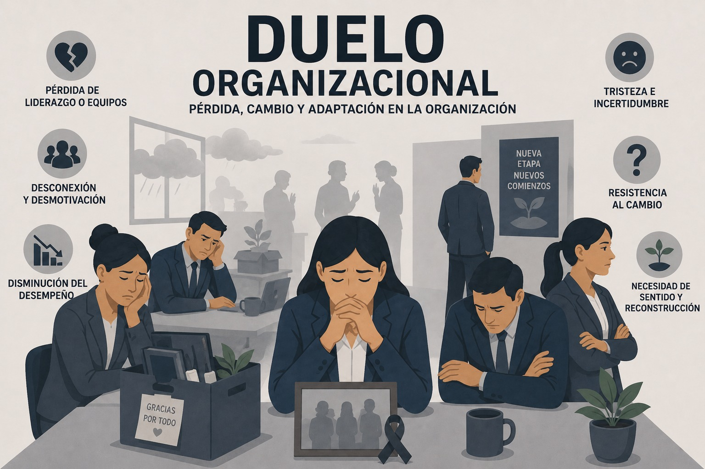

Riesgo psicosocial
Duelo organizacional
Proceso emocional individual y colectivo frente a pérdidas significativas dentro de la organización.

Definición
El duelo es un proceso psicológico que describe la evolución de la reacción ante una pérdida importante. No solo se experimenta ante el fallecimiento de un ser querido, sino también frente a situaciones que generan una sensación de vacío, ausencia o abandono. El duelo aparece cuando se presenta una interrupción o pérdida definitiva y, en la mayoría de los casos, irreversible, de algo significativo (Sánchez, 2024).
En el entorno laboral, el duelo se refiere a la respuesta emocional y psicológica que experimentan los empleados frente a la pérdida de algo significativo, como la muerte de un colega, la reestructuración de la empresa, la pérdida de un proyecto importante o cualquier otro cambio que afecte a la organización y a sus miembros (APD Colombia, 2023).
En el duelo organizacional, las empresas no son únicamente estructuras económicas, sino comunidades humanas en las que las pérdidas significativas generan procesos emocionales tanto individuales como colectivos (Gayoso, 2025).
El duelo organizacional es un fenómeno que ocurre cuando los equipos de trabajo enfrentan pérdidas significativas dentro del entorno corporativo. A diferencia del duelo personal, surge específicamente ante situaciones como la desaparición de proyectos, despidos masivos, cierres de áreas o cambios estructurales profundos (Politécnico de Suramérica, 2025).
Características
- Constituye una reacción normal ante la pérdida de un ser querido, un animal, un objeto o una etapa significativa de la vida (Fondo de las Naciones Unidas para la Infancia y Fundación Silencio, 2020).
- Corresponde a un proceso natural y no a un estado permanente, que atraviesa una persona ante la muerte de un ser querido o cualquier situación considerada significativa en su vida (Ministerio del Trabajo y Pontificia Universidad Javeriana, 2016).
- Presenta una naturaleza psicológica compleja y no lineal, por lo que pueden producirse avances y retrocesos a lo largo de su evolución (Ifeel, 2021).
- La persona puede alternar entre momentos de conexión con la realidad de la pérdida y otros en los que orienta su atención hacia diferentes aspectos de su vida cotidiana (Ifeel, 2021).
- En el ámbito laboral, los trabajadores pueden transitar por fases como la negación e ira, la negociación, la depresión y la revisión. El proceso puede finalizar mediante la aceptación de la pérdida o la desvinculación de la organización, consideradas fases de no retorno (Castillo, 2020).
Duelo normal vs. duelo patológico
El protocolo enfatiza que la diferencia radica principalmente en la intensidad y duración de las reacciones emocionales (Ministerio del Trabajo y Pontificia Universidad Javeriana, 2016):
- Duelo Normal: Aparece a los pocos días del fallecimiento y puede ser incapacitante por un tiempo breve.
- Duelo Patológico: Puede ser reprimido (el sujeto no se aflige), aplazado (reacciona exageradamente tiempo después ante una pérdida menor) o crónico (duelo intenso y excesivamente prolongado). Incluye reacciones graves como alucinaciones complejas, creer que uno mismo es el fallecido o establecer conductas anormales como visitar el cementerio diariamente. Estos casos requieren siempre remisión a especialistas en salud mental.
Tipos de duelos en la organización
- Fallecimiento de un trabajador: Es la situación más similar al duelo personal. El impacto depende de la antigüedad y cercanía del fallecido, así como de las circunstancias de la muerte; las muertes traumáticas (accidentes, suicidios) generan una conmoción mayor y pueden afectar la sensación de seguridad del equipo.
- Despidos masivos y reestructuraciones (ERE): No solo sufren quienes pierden su empleo, sino también los que permanecen, fenómeno conocido como el síndrome del superviviente. Estos empleados experimentan culpa, miedo a futuros despidos, pérdida de confianza y desmotivación, atravesando fases similares a las del duelo personal (incredulidad, angustia y aceptación resignada).
- Jubilaciones o salidas de personal esencial: Aunque la persona sigue viva, su ausencia diaria se siente como una pérdida. Si se trata de un líder carismático o el fundador, su partida puede dejar un vacío en la identidad corporativa.
- Pérdida de identidad por fusiones o cambios culturales: En las fusiones, los empleados de la empresa absorbida pueden sentirse "huérfanos" al desaparecer su marca. Asimismo, las transformaciones digitales drásticas provocan un "duelo tecnológico", donde el personal pasa por la negación, la frustración y la negociación antes de aceptar las nuevas herramientas (Gayoso, 2025).
Mitos y realidades del duelo
- El duelo no es una enfermedad mental. Aunque puede generar tristeza intensa, cambios emocionales y dificultades temporales en el funcionamiento cotidiano, constituye una reacción adaptativa y esperable frente a una pérdida significativa (Fondo de las Naciones Unidas para la Infancia y Fundación Silencio, 2020).
- No todas las personas atraviesan las mismas etapas ni en el mismo orden. El duelo no sigue una secuencia fija de fases, sino que cada persona lo experimenta de manera particular y con ritmos diferentes (Fondo de las Naciones Unidas para la Infancia y Fundación Silencio, 2020).
- La intensidad del dolor no depende del género ni de la edad. Ideas como que los hombres afrontan mejor las pérdidas o que las personas jóvenes se recuperan más rápido corresponden a creencias culturales que no reflejan la experiencia individual del duelo (Fondo de las Naciones Unidas para la Infancia y Fundación Silencio, 2020).
- No existe un tiempo determinado para superar una pérdida. El proceso no concluye automáticamente con el paso de los meses ni existe un plazo universal para considerarlo finalizado (Consejería de Sanidad, 2009).
- La evolución del dolor no suele ser constante. Durante las primeras semanas puede verse atenuado por el impacto inicial de la pérdida y alcanzar mayor intensidad meses después, cuando la ausencia se hace plenamente consciente para la persona (Consejería de Sanidad, 2009).
- La disminución del dolor y la recuperación de la ilusión suelen ocurrir de manera gradual. Mientras el duelo se vive con mayor intensidad, es esperable que disminuya el interés o la motivación por actividades que anteriormente resultaban gratificantes (Consejería de Sanidad, 2009).
Causas
Puede originarse por pérdidas relacionadas con la vida propia o la de otras personas, así como por cambios asociados a la salud, la autoestima, los ideales, el empleo, el hogar, las pertenencias materiales, las relaciones afectivas y las transiciones propias del ciclo vital (Fondo de las Naciones Unidas para la Infancia y Fundación Silencio, 2020).
En el contexto organizacional, puede presentarse ante situaciones como el fallecimiento de un compañero, procesos de reestructuración, despidos, cierre de áreas o finalización de proyectos importantes (APD Colombia, 2023; Politécnico de Suramérica, 2025).
Entre estas situaciones, el despido constituye una de las experiencias más estresantes que puede afrontar una persona, siendo superada únicamente por la muerte de un ser querido. De acuerdo con el DSM-5, puede asociarse con la aparición de síntomas de ansiedad, depresión o estrés postraumático (Rodríguez, 2024).
Consecuencias
- El duelo laboral puede manifestarse como ausentismo, bajo rendimiento, dificultad para concentrarse, conflictos interpersonales o renuncias inesperadas (Villegas, 2025).
- En la fase de depresión, la persona pierde la motivación; en la fase de deserción, puede decidir abandonar la organización (Castillo, 2020).
- Afecta la salud emocional y la estabilidad organizacional en aspectos como:
- Productividad y rendimiento: bajo rendimiento, dificultades para concentrarse, menor compromiso.
- Dinámica de equipos: debilita la cohesión grupal y pone en riesgo objetivos organizacionales.
- Clima laboral: puede generar desgaste emocional, conflictos y deterioro cultural.
- Gestión del talento: favorece el ausentismo y las renuncias inesperadas.
- Resiliencia organizacional: sin estrategias claras, la empresa pierde capacidad de adaptación a cambios y crisis.
- (Politécnico de Suramérica, 2025)
Manifestaciones del duelo
El impacto de la pérdida es multidimensional y varía según la persona. Se manifiesta en las siguientes dimensiones (Fondo de las Naciones Unidas para la Infancia y Fundación Silencio, 2020):
- Física: sensación de vacío, nudo en la garganta, alteraciones de sueño y apetito.
- Emocional: tristeza, ira, culpa, ansiedad e impotencia.
- Cognitiva: confusión, dificultad para concentrarse y falta de interés.
- Conductual y social: aislamiento, hiperactividad o aumento en el consumo de sustancias.
- Espiritual: replanteamiento de creencias y búsqueda de sentido ("¿por qué a mí?").
Mecanismos de prevención organizacional
Promover un liderazgo empático y consciente (escucha activa, sostener conversaciones difíciles y acompañar sin invadir los procesos personales).
Fortalecer las acciones del área de gestión humana mediante el diseño de protocolos de acompañamiento, el acceso a recursos de apoyo psicológico y la organización de talleres de bienestar (Villegas, 2025).
Fomentar una comunicación clara y empática, informando de manera oportuna y respetuosa y evitando el silencio organizacional (Villegas, 2025).
Desarrollar evaluaciones y planes de apoyo personalizados, reconociendo que no todos los colaboradores atraviesan el duelo de la misma forma (Villegas, 2025).
Cultivar una actitud paciente y empática, ofreciendo disponibilidad y colaboración de manera concreta, tomando la iniciativa con naturalidad y sin agobiar (Ifeel, 2021).
Revisar los horarios del trabajador en duelo y brindar opciones de flexibilidad, como el teletrabajo (Ifeel, 2021).
Reconocer que el manejo del duelo no debe ser improvisado, sino que requiere estrategias claras y formación especializada para líderes y personal de Recursos Humanos (Politécnico de Suramérica, 2025).
Estrategias de autocuidado y afrontamiento del duelo
Pautas de autocuidado
- Física: mantener higiene personal, alimentación saludable, ejercicio y evitar el alcohol o tabaco (Fondo de las Naciones Unidas para la Infancia y Fundación Silencio, 2020).
- Emocional: aceptar los sentimientos, conversar con otros mediante plataformas digitales y contar con una red de apoyo (Fondo de las Naciones Unidas para la Infancia y Fundación Silencio, 2020).
- Cognitiva: no exigirse demasiado intelectualmente, limitar la exposición a noticias negativas y redactar objetivos diarios sencillos (Fondo de las Naciones Unidas para la Infancia y Fundación Silencio, 2020).
- Espiritual: realizar prácticas de silencio, crear un rincón de recuerdos en casa, escribir cartas y rememorar los buenos momentos (Fondo de las Naciones Unidas para la Infancia y Fundación Silencio, 2020).
Estrategias para el afrontamiento del duelo
Reconocer y validar emociones como la tristeza, frustración, enojo, culpa o miedo como parte de la experiencia de pérdida (Seguros SURA, s. f.).
Buscar espacios de tranquilidad y utilizar estrategias de regulación como la respiración profunda para favorecer el manejo emocional (Seguros SURA, s. f.).
Expresar los sentimientos a través del llanto, la conversación, el arte o la escritura, respetando la forma en que cada persona vive el duelo (Seguros SURA, s. f.).
Mantener hábitos de autocuidado relacionados con la alimentación, la hidratación, el descanso y la actividad física (Seguros SURA, s. f.).
Recuperar progresivamente las rutinas diarias y las actividades de cuidado personal (Seguros SURA, s. f.).
Mantener el contacto con familiares y amigos para fortalecer el apoyo social y reducir el aislamiento (Seguros SURA, s. f.).
Recordar y compartir experiencias, aprendizajes y momentos significativos asociados al ser querido o a la pérdida experimentada (Seguros SURA, s. f.).
¿Cómo ayudar a alguien en duelo?
Para quienes desean apoyar, la guía sugiere (García-Herrera y Nogueras, 2013):
- Presencia y escucha: Pasar tiempo con la persona, dejar que llore y hable de sus sentimientos sin importar que repita el mismo tema.
- Validación: No decir "recobra el ánimo"; es mejor validar su frustración. Tampoco se debe tomar de forma personal la irritabilidad o el enfado del doliente.
- Apoyo práctico: Ayudar con la limpieza, las compras o el cuidado de los niños.
- Acompañamiento: Estar presente en momentos dolorosos como los aniversarios y animar a la persona a participar en eventos sociales.
Intervención y apoyo profesional
- Prevención primaria (educación): realización de charlas de sensibilización y capacitación para todos los trabajadores, con el fin de que comprendan que el duelo no es una patología y sepan identificar señales de alerta (Ministerio del Trabajo y Pontificia Universidad Javeriana, 2016).
- Prevención secundaria (acompañamiento): dirigida a trabajadores en duelo, especialmente aquellos con escasa red de apoyo. Los objetivos son facilitar la expresión de sentimientos, ayudar a resolver problemas prácticos y acompañar mediante la escucha empática y el respeto al silencio (Ministerio del Trabajo y Pontificia Universidad Javeriana, 2016).
- Prevención terciaria (rehabilitación): se aplica cuando el duelo deriva en trastornos psiquiátricos que comprometen la funcionalidad laboral. La empresa debe fortalecer las redes de apoyo, mantener comunicación con la familia y la entidad de salud, y realizar los ajustes necesarios para el reintegro o reconversión del puesto de trabajo (Ministerio del Trabajo y Pontificia Universidad Javeriana, 2016).
Para la resolución del duelo se mencionan la terapia breve, la psicoterapia de apoyo, la psicoeducación y la terapia de grupo, las cuales deben ser aplicadas por profesionales idóneos (Ministerio del Trabajo y Pontificia Universidad Javeriana, 2016).
Entre las herramientas prácticas para la intervención se encuentran la fórmula TERCA, los mensajes de esperanza, la escritura de cartas, el trabajo con la huella vital y el uso de objetos de vinculación, así como evitar frases que minimicen el dolor o invaliden la experiencia de la persona (Consejería de Sanidad, 2009).
¿Cuándo buscar ayuda profesional?
Existen señales de alerta que indican que la situación puede estar sobrepasando las capacidades de afrontamiento individuales (Seguros SURA, s. f.):
- Pensamientos recurrentes: Ideas constantes sobre la muerte o sentimientos intensos de culpa.
- Conductas de riesgo: Excesos en el consumo de alcohol, drogas, cafeína o adicciones al juego.
En estos casos, se insta a buscar el acompañamiento de expertos que enseñen nuevas estrategias para transitar el duelo
Instrumento de evaluación
El método CoPsoQ-istas21 es una herramienta técnica diseñada para la evaluación e intervención sobre los riesgos psicosociales en la organización del trabajo que afectan la salud de los empleados. Se destaca por ser el único método que incorpora la doble presencia como un factor de riesgo psicosocial específico, entendida como la necesidad de responder simultáneamente a las demandas del trabajo doméstico-familiar y del trabajo asalariado. Incluye una escala de cuatro ítems para evaluar la doble presencia dentro del grupo de conflicto trabajo-familia. El proceso garantiza la participación activa de las trabajadoras, permitiendo que quienes están directamente expuestas a los riesgos contribuyan en la identificación y propuesta de soluciones (Instituto Sindical de Trabajo, Ambiente y Salud [ISTAS], s. f.).
Recomendaciones para el liderazgo y la gestión del duelo organizacional
Ignorar el componente emocional durante situaciones de pérdida puede incrementar la frustración, el ausentismo y el estrés laboral, además de afectar la moral y el desempeño del equipo. La gestión del duelo organizacional requiere empatía, transparencia y espacios que faciliten el cierre y la adaptación frente a los cambios (Gayoso, 2025).
- Ante un fallecimiento: se recomienda reconocer la pérdida de manera oficial mediante mensajes cercanos y respetuosos, facilitar la asistencia a ceremonias de despedida, ofrecer apoyo psicológico y actuar con sensibilidad frente a los objetos y espacios que pertenecían a la persona fallecida (Gayoso, 2025).
- Ante jubilaciones: se recomienda promover actividades de reconocimiento, homenajes o celebraciones que permitan cerrar el ciclo laboral y destacar el aporte realizado por la persona a la organización (Gayoso, 2025).
- Ante fusiones y cambios organizacionales: resulta conveniente reconocer la historia y la identidad de la organización, así como involucrar trabajadores que faciliten la adaptación de sus compañeros a los nuevos procesos y objetivos institucionales (Gayoso, 2025).
- Ante despidos: la comunicación clara y basada en hechos contribuye a reducir la incertidumbre. Se recomienda evitar juicios personales, preparar previamente los aspectos administrativos y ofrecer acompañamiento durante el proceso (Rodríguez, 2024).
- Rol del liderazgo y de Recursos Humanos: el jefe directo debería comunicar la decisión debido a su cercanía con el trabajador, mientras que Recursos Humanos puede brindar orientación técnica y apoyo emocional durante el proceso (Rodríguez, 2024).
- Apoyo posterior a la desvinculación: ofrecer herramientas como talleres de recolocación laboral, asesoría para la elaboración del currículum o apoyo psicológico puede facilitar la transición hacia una nueva etapa profesional (Rodríguez, 2024).
- Atención al equipo que permanece: comunicar los cambios de manera transparente y permitir espacios para expresar inquietudes contribuye a proteger el clima laboral y disminuir la aparición de rumores (Rodríguez, 2024).
- Despedida digna: permitir que la persona pueda despedirse de sus compañeros favorece el cierre del ciclo laboral y la adaptación tanto del trabajador como del equipo (Rodríguez, 2024).
Beneficios para la organización
- Reducción del ausentismo (Politécnico de Suramérica, 2025).
- Mejora del clima laboral y fortalecimiento del sentido de pertenencia (Politécnico de Suramérica, 2025).
- Recuperación más rápida del compromiso y del desempeño laboral cuando existe orientación y comunicación empática (Politécnico de Suramérica, 2025).
- Desarrollo de la resiliencia organizacional y de la capacidad de adaptarse colectivamente a las pérdidas y cambios (Politécnico de Suramérica, 2025).
Material de apoyo
Mirar video en YouTube (qUGkJr61iG0) Mirar video en YouTube (K0EbHfiku20) Mirar video en YouTube (4-WaMxfbD_E)Referencias bibliográficas
APD Colombia. (2023). El duelo y la gestión organizacional. https://www.apdcolombia.org/el-duelo-y-la-gestion-organizacional/
Castillo Gutiérrez, C. (2020, 26 de octubre). Las seis fases del duelo en entornos organizacionales. Blog d'Economia i Empresa, Universitat Oberta de Catalunya. https://blogs.uoc.edu/economia-empresa/es/las-6-fases-del-duelo-en-entornos-organizacionales/
Consejería de Sanidad. (2009). Guía de duelo adulto para profesionales socio-sanitarios. Comunidad de Madrid. https://fundacionmlc.org/wp-content/uploads/2020/03/Guia-Duelo-Adulto-FMLC.pdf
Fondo de las Naciones Unidas para la Infancia & Fundación Silencio. (2020). Manual sobre el duelo: Manual de capacitación para acompañamiento y abordaje de duelo. UNICEF. https://www.unicef.org/elsalvador/media/3191/file/Manual%20sobre%20Duelo.pdf
García-Herrera, J. M., & Nogueras Morillas, E. V. (2013). ¿Cómo afrontar el duelo? (Guías de autoayuda para la depresión y los trastornos de ansiedad). Servicio Andaluz de Salud; Consejería de Salud y Bienestar Social; Junta de Andalucía . http://www.juntadeandalucia.es/servicioandaluzdesalud/saludmental
Gayoso, A. (2025, 4 de noviembre). Duelo en la empresa: cómo liderar ante una pérdida (muerte, ERE, jubilación, fusión [Video]. YouTube. https://www.youtube.com/watch?v=VkRK1vF0yjY
Ifeel. (2021, 1 de diciembre). ¿Cómo afrontar el duelo en el entorno laboral? https://ifeelonline.com/es/salud-laboral/como-afrontar-el-duelo-en-el-entorno-laboral/
Ministerio del Trabajo & Pontificia Universidad Javeriana. (2016). Situaciones de duelo: Protocolo de actuación en el entorno laboral. Posipedia; Ministerio del Trabajo. https://posipedia.com.co/wp-content/uploads/2019/08/situaciones-duelo.pdf
OpenAI. (2026). Imagen conceptual sobre Duelo Organizacional con subtítulo "Pérdida, cambio y adaptación en la organización" mostrando un equipo en transición y cajas de mudanza [Imagen generada por IA]. ChatGPT. https://chatgpt.com
PAHO TV. (2022, 15 de febrero). Ante una pérdida significativa: manejo del duelo [Video]. YouTube. http://www.youtube.com/watch?v=qUGkJr61iG0
Pérez, G. (2023, 22 de febrero). Duelo en la oficina | Tanatotip | Gaby Tanatóloga [Video]. YouTube. http://www.youtube.com/watch?v=K0EbHfiku20
Politécnico de Suramérica. (2025, 13 de septiembre). Cómo superar la gestión del duelo en el trabajo: claves para el bienestar organizacional. Polisura. https://www.polisura.edu.co/como-superar-la-gestion-del-duelo-en-el-trabajo-claves-para-el-bienestar-organizacional
Rodríguez, E. (2024, 18 de octubre). Duelo Laboral: cómo gestionarlo desde la Psicología y Recursos Humanos [Video]. YouTube. https://www.youtube.com/watch?v=88CDFbq3gh8
Sánchez González, M. (2024, 1 de octubre). El duelo: Definición y abordaje terapéutico. Actualidad en Psicología. https://www.actualidadenpsicologia.com/duelo-definicion-abordaje-terapeutico/
Seguros SURA. (s. f.). Cómo afrontar el duelo en momentos de crisis. https://www.segurossura.com.co/documentos/comunicaciones/covid-19/como-afrontar-el-duelo.pdf
Somos Estupendas. (2023, 13 de julio). Todo sobre el duelo | Somos Estupendas [Video]. YouTube. http://www.youtube.com/watch?v=4-WaMxfbD_E
Villegas, A. (2025, 13 de septiembre). Cómo superar la gestión del duelo en el trabajo: Claves para el bienestar organizacional. Politécnico de Suramérica. https://www.polisura.edu.co/como-superar-la-gestion-del-duelo-en-el-trabajo-claves-para-el-bienestar-organizacional/